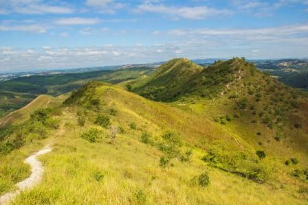

Morro do Saboó
{kind=link}
Ponto mais alto da Estância Turística de São Roque, o lendário morro do Saboó é a marca registrada da cidade. Atinge aproximadamente 1000m de altitude e sua forma lembra o dorso de um dinossauro deitado. É formado por uma massa de quartzito e recoberta por vegetação rasteira e uniforme, motivo pelo qual originalmente recebeu o nome de Morro Pelado, dado pelos Índios Saboó.
Está localizado a 10km do centro da cidade e pode ser visto de quase todos os pontos altos da cidade. Do alto dos seus 1000 metros de altitude é possível ter uma incrível vista de toda a região, onde em dias claros é possível avistar até mesmo a cidade de Sorocaba, distante 40 km de São Roque. Seu topo é alcançado por caminhada através de uma trilha de nível médio em meio a rica flora da região. Aventura e ecologia reunidas em um só lugar. Aos finais de semana praticantes de camping, alpinismo, paraglider, motocross, mountain bike, entre outros esportes costumam frequentar o lugar em busca de aventura e diversão.